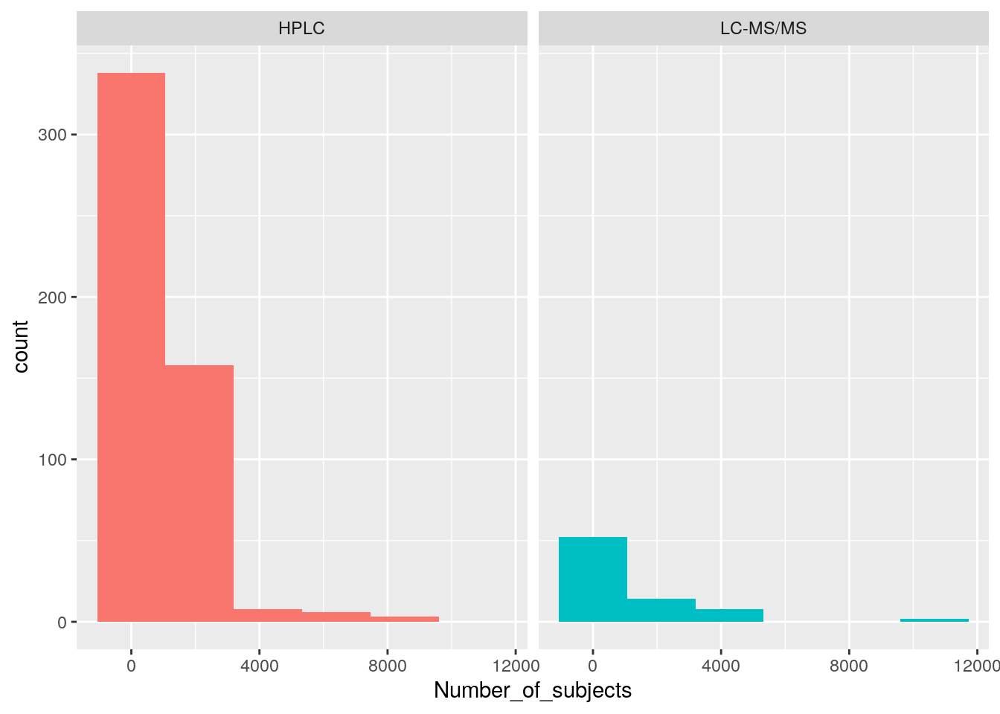
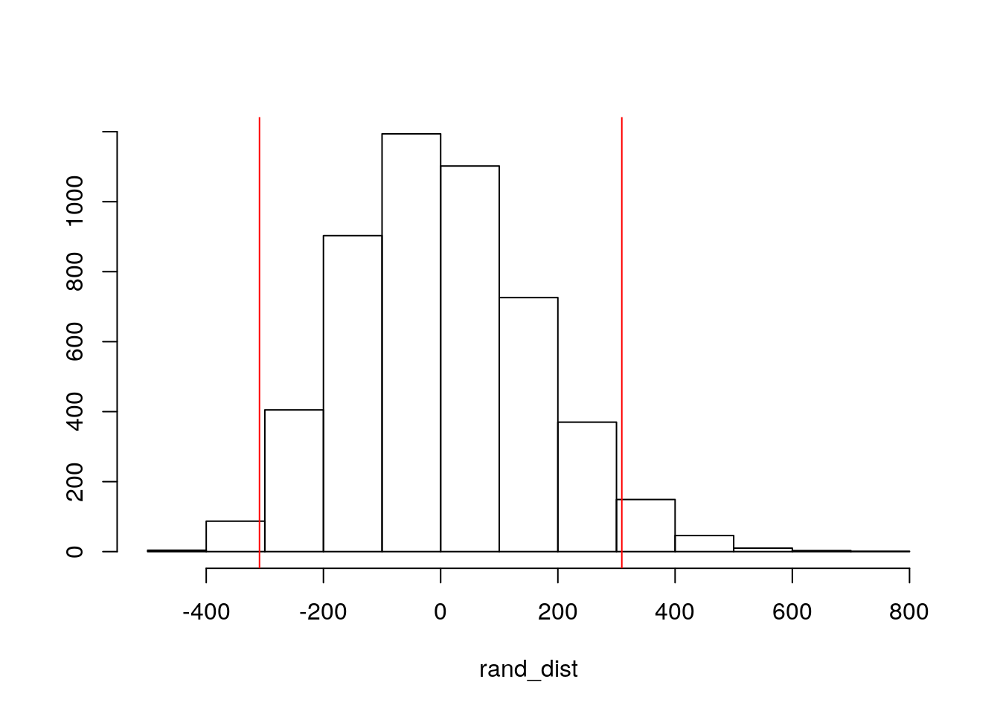
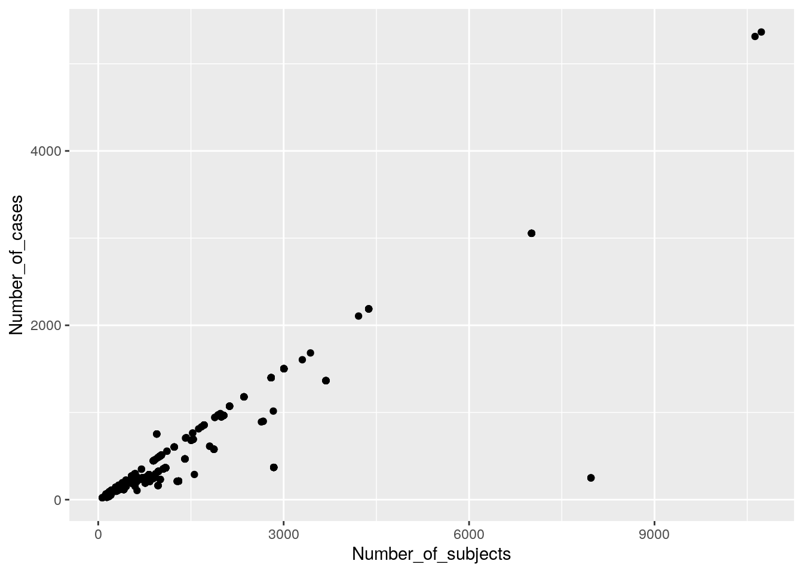
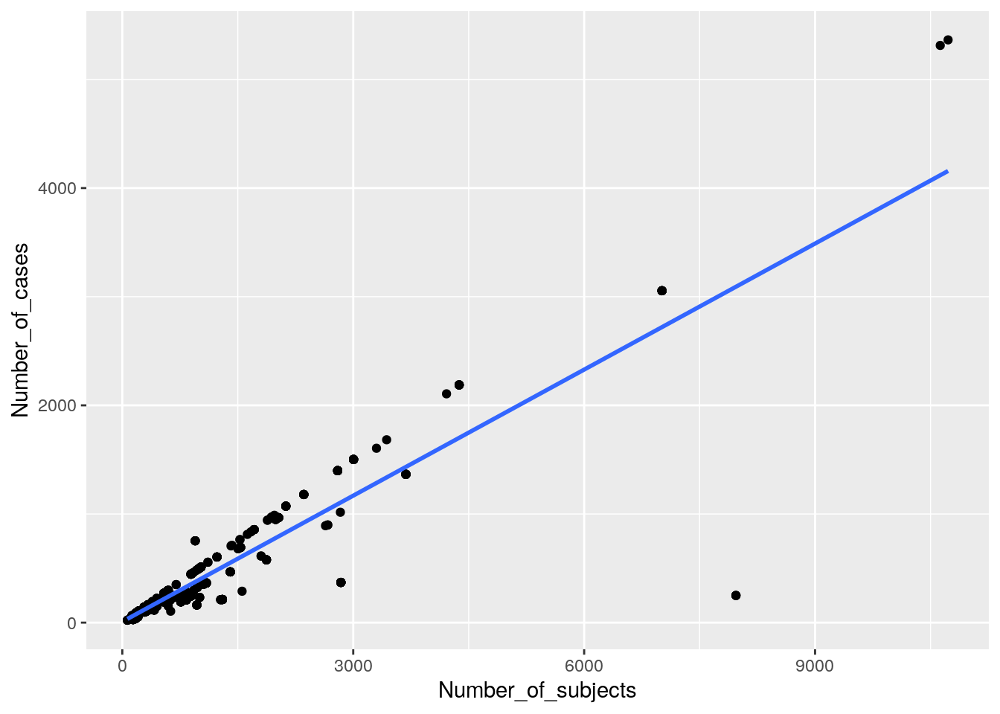
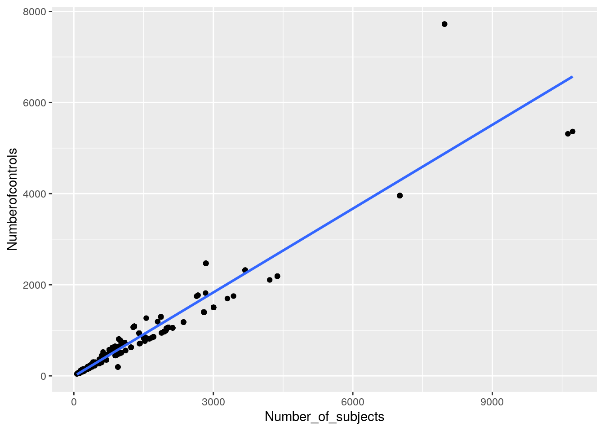
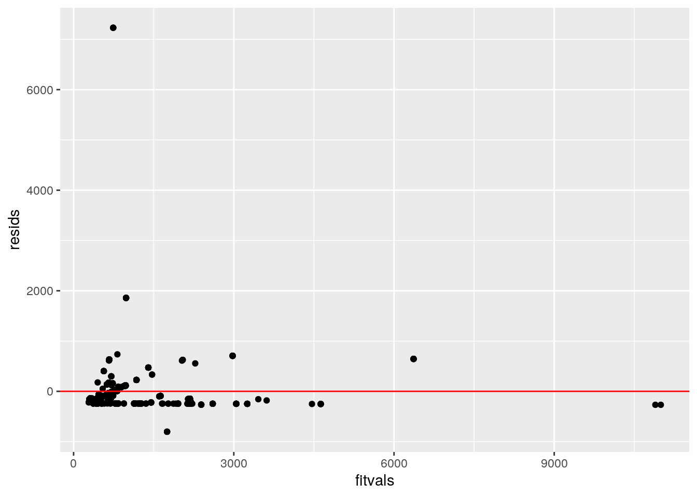
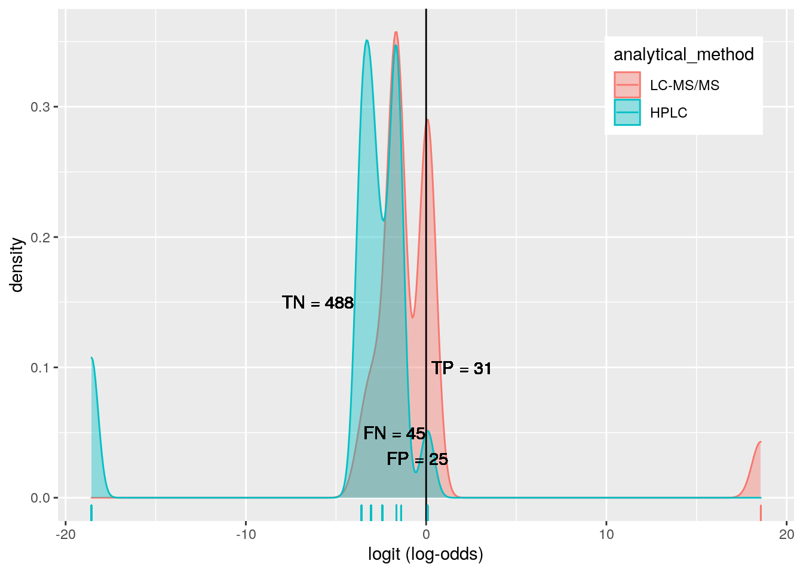
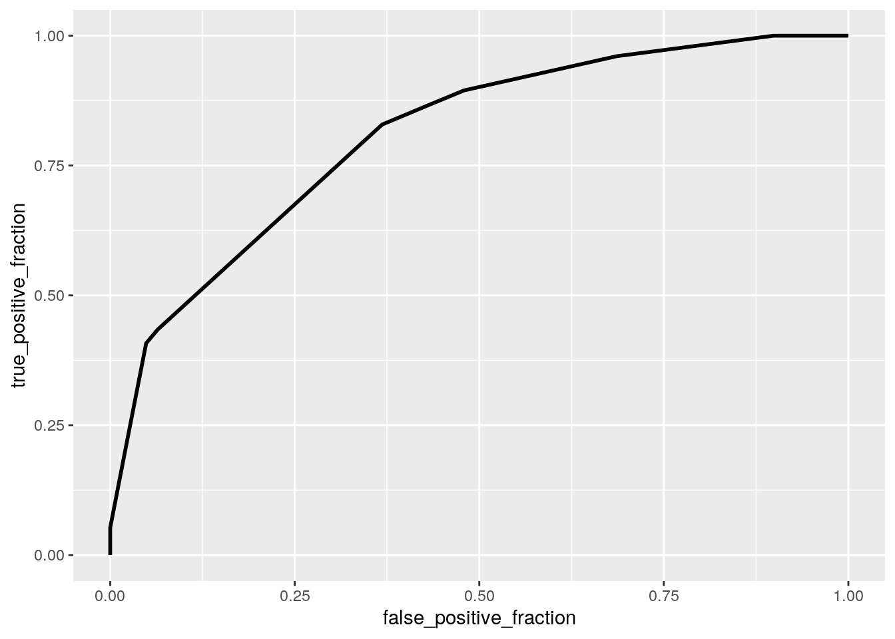
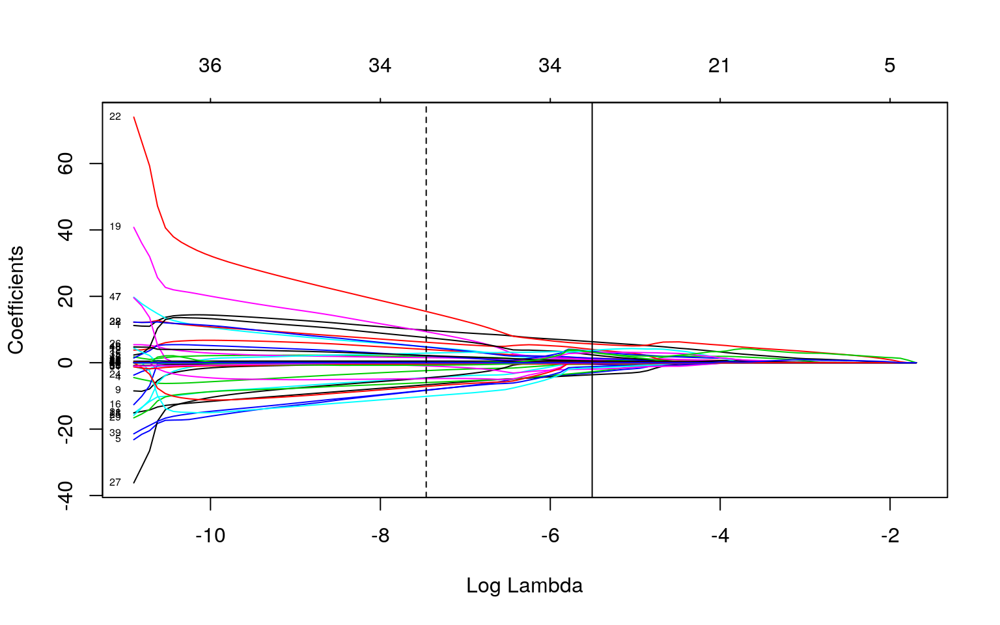

YEN BAO HUYNH ybh83
#HERE IS MY PROJECT The dataset was acquired from the Exposome Explorer website (http://exposome-explorer.iarc.fr/). This website a database about biomarkers of exposure to environmental risk factors for diseases. From this site, I got a cancer associations dataset. This datatset is about the different acquired specimens of cancer patients. The dataset, generally, provides information such as what biomarkers were used to identify the different cancers, what kind of analytical method (GC-MS, LC-MS, HPLC, etc) were used, and some other related epidemiological data.
library(tidyverse)## ── Attaching packages ─────────────────────────────────────── tidyverse 1.3.0 ──## ✓ ggplot2 3.3.3 ✓ purrr 0.3.4
## ✓ tibble 3.0.4 ✓ dplyr 1.0.2
## ✓ tidyr 1.1.2 ✓ stringr 1.4.0
## ✓ readr 1.4.0 ✓ forcats 0.5.0## ── Conflicts ────────────────────────────────────────── tidyverse_conflicts() ──
## x dplyr::filter() masks stats::filter()
## x dplyr::lag() masks stats::lag()library(dplyr)cancer_dat <-read_csv("cancer_association_forR.csv")##
## ── Column specification ────────────────────────────────────────────────────────
## cols(
## ID = col_double(),
## ExcretionID = col_double(),
## Subjectgroup = col_character(),
## Population = col_character(),
## Country = col_character(),
## Cohort = col_character(),
## Number_of_subjects = col_double(),
## Number_of_cases = col_double(),
## Numberofcontrols = col_double(),
## Biospecimen = col_character(),
## analytical_method = col_character(),
## Biomarker = col_character(),
## Biomarker_detail = col_character(),
## Cancer = col_character(),
## Study_design = col_character(),
## Publication = col_character()
## )glimpse(cancer_dat)## Rows: 1,356
## Columns: 16
## $ ID <dbl> 1, 6, 7, 8, 9, 10, 11, 12, 13, 14, 15, 36, 37, 38,…
## $ ExcretionID <dbl> 20999, 21004, 21005, 21006, 21007, 21008, 21009, 2…
## $ Subjectgroup <chr> "All", "All", "All", "All", "All", "All", "All", "…
## $ Population <chr> "Renal cell carcinoma cases and their controls", "…
## $ Country <chr> "Finland", "Netherlands", "Netherlands", "Netherla…
## $ Cohort <chr> "ATBC (Alpha-Tocopherol, Beta-Carotene Cancer Prev…
## $ Number_of_subjects <dbl> 448, 3004, 3004, 3004, 3004, 3004, 3004, 3004, 300…
## $ Number_of_cases <dbl> 224, 1502, 1502, 1502, 1502, 1502, 1502, 1502, 150…
## $ Numberofcontrols <dbl> 224, 1502, 1502, 1502, 1502, 1502, 1502, 1502, 150…
## $ Biospecimen <chr> "Serum, fasting", "Plasma, fasting and non-fasting…
## $ analytical_method <chr> "Competitive protein-binding assay (CPBA)", "HPLC"…
## $ Biomarker <chr> "Folates", "alpha-Carotene", "beta-Carotene", "Lyc…
## $ Biomarker_detail <chr> NA, NA, NA, NA, NA, NA, NA, NA, NA, NA, NA, NA, NA…
## $ Cancer <chr> "Kidney cancer", "Breast cancer", "Breast cancer",…
## $ Study_design <chr> "Nested case-control study", "Nested case-control …
## $ Publication <chr> "Gibson 2010", "Bakker 2016", "Bakker 2016", "Bakk…#How many observations in the original dataset?
count(cancer_dat)## # A tibble: 1 x 1
## n
## <int>
## 1 1356#Answer: 1356 observations#Just doing some tidying here. I’m only interested in biological samples that were analyzed by either HPLC or LC-MS/MS so I filtered out those two data. Also by this way I can create binary variables for this project…
cancer_dat2 <- cancer_dat%>%select(-"Biomarker_detail")%>%na.omit()%>%filter(analytical_method=="HPLC")
cancer_dat3 <- cancer_dat%>%select(-"Biomarker_detail")%>%na.omit()%>%filter(analytical_method=="LC-MS/MS")
cancerdata<-rbind(cancer_dat3,cancer_dat2)
cancerdata_final<-cancerdata%>%mutate(y=ifelse(analytical_method=="LC-MS/MS",1,0))1. (15 pts) Perform a MANOVA testing whether any of your numeric variables (or a subset of them, if including them all is unreasonable or doesn’t make sense) show a mean difference across levels of one of your categorical variables (3). If they do, perform univariate ANOVAs to find response(s) showing a mean difference across groups (3), and perform post-hoc t tests to find which groups differ (3). Discuss the number of tests you have performed, calculate the probability of at least one type I error (if unadjusted), and adjust the significance level accordingly (bonferroni correction) before discussing significant differences (3). Briefly discuss some of the MANOVA assumptions and whether or not they are likely to have been met here (no need for anything too in-depth) (2). 1. (15 pts) Let’s see if the No. of subjects and No.of cases are different among cancers (the different types of cancers)
#Firstly, test with MANOVA
man1 <- manova(cbind(Number_of_subjects,Number_of_cases)~Cancer, data=cancerdata_final)
summary(man1)## Df Pillai approx F num Df den Df Pr(>F)
## Cancer 14 0.19237 4.3633 28 1148 6.472e-13 ***
## Residuals 574
## ---
## Signif. codes: 0 '***' 0.001 '**' 0.01 '*' 0.05 '.' 0.1 ' ' 1#p-value is much lower than 0.05. Overall MANOVA is significant#The difference is significant now. Let's do ANOVA to see which is different across the cancer types: number of subjects or number of cases
summary.aov(man1)## Response Number_of_subjects :
## Df Sum Sq Mean Sq F value Pr(>F)
## Cancer 14 125697886 8978420 5.9996 3.985e-11 ***
## Residuals 574 858991240 1496500
## ---
## Signif. codes: 0 '***' 0.001 '**' 0.01 '*' 0.05 '.' 0.1 ' ' 1
##
## Response Number_of_cases :
## Df Sum Sq Mean Sq F value Pr(>F)
## Cancer 14 22683245 1620232 5.561 3.991e-10 ***
## Residuals 574 167239534 291358
## ---
## Signif. codes: 0 '***' 0.001 '**' 0.01 '*' 0.05 '.' 0.1 ' ' 1#Seems like both the number of subjects and number of cases are significantly different across the different types of cancer. So, at least one type of cancer differs!#Post-hoc t tests
cancerdata_final%>%group_by(Cancer)%>%summarize(mean(Number_of_subjects),mean(Number_of_cases))## `summarise()` ungrouping output (override with `.groups` argument)## # A tibble: 15 x 3
## Cancer `mean(Number_of_subjects… `mean(Number_of_cases…
## <chr> <dbl> <dbl>
## 1 Bladder cancer 499. 235.
## 2 Brain cancer 128 64
## 3 Breast cancer 1358. 598.
## 4 Cervical cancer 146. 48.9
## 5 Colon and rectal cancer 1748. 718.
## 6 Gastric and oesophageal can… 1330. 402.
## 7 Head and neck cancer 220. 75.1
## 8 Kidney cancer 780 390
## 9 Liver cancer 1070. 199
## 10 Lung cancer 1306. 510.
## 11 Lymphoid cancer 809 271
## 12 Ovarian cancer 102 35
## 13 Pancreatic cancer 670. 315.
## 14 Prostate cancer 1409. 534.
## 15 Skin cancer 236. 90.9pairwise.t.test(cancerdata_final$Number_of_subjects,cancerdata_final$Cancer, p.adj="none")##
## Pairwise comparisons using t tests with pooled SD
##
## data: cancerdata_final$Number_of_subjects and cancerdata_final$Cancer
##
## Bladder cancer Brain cancer Breast cancer
## Brain cancer 0.33973 - -
## Breast cancer 0.00020 0.00032 -
## Cervical cancer 0.42231 0.97198 0.00242
## Colon and rectal cancer 6.4e-06 1.5e-05 0.05073
## Gastric and oesophageal cancer 0.00154 0.00096 0.87756
## Head and neck cancer 0.38612 0.82252 1.6e-05
## Kidney cancer 0.66425 0.34757 0.35080
## Liver cancer 0.10994 0.03110 0.34262
## Lung cancer 0.00483 0.00202 0.81113
## Lymphoid cancer 0.43767 0.14892 0.11927
## Ovarian cancer 0.38679 0.96034 0.00279
## Pancreatic cancer 0.63153 0.21402 0.02357
## Prostate cancer 0.00019 0.00026 0.73538
## Skin cancer 0.46851 0.80756 0.00033
## Cervical cancer Colon and rectal cancer
## Brain cancer - -
## Breast cancer - -
## Cervical cancer - -
## Colon and rectal cancer 0.00018 -
## Gastric and oesophageal cancer 0.00467 0.07598
## Head and neck cancer 0.87190 5.5e-07
## Kidney cancer 0.38123 0.12898
## Liver cancer 0.05591 0.04545
## Lung cancer 0.00750 0.09238
## Lymphoid cancer 0.19796 0.01439
## Ovarian cancer 0.93791 0.00023
## Pancreatic cancer 0.27747 0.00151
## Prostate cancer 0.00192 0.11424
## Skin cancer 0.85394 1.4e-05
## Gastric and oesophageal cancer
## Brain cancer -
## Breast cancer -
## Cervical cancer -
## Colon and rectal cancer -
## Gastric and oesophageal cancer -
## Head and neck cancer 0.00014
## Kidney cancer 0.38402
## Liver cancer 0.42810
## Lung cancer 0.92492
## Lymphoid cancer 0.16337
## Ovarian cancer 0.00507
## Pancreatic cancer 0.04452
## Prostate cancer 0.68708
## Skin cancer 0.00115
## Head and neck cancer Kidney cancer Liver cancer
## Brain cancer - - -
## Breast cancer - - -
## Cervical cancer - - -
## Colon and rectal cancer - - -
## Gastric and oesophageal cancer - - -
## Head and neck cancer - - -
## Kidney cancer 0.39534 - -
## Liver cancer 0.02490 0.66813 -
## Lung cancer 0.00053 0.41224 0.49633
## Lymphoid cancer 0.15939 0.96694 0.55790
## Ovarian cancer 0.80470 0.35676 0.05307
## Pancreatic cancer 0.23388 0.87116 0.32730
## Prostate cancer 1.6e-05 0.31337 0.27866
## Skin cancer 0.96693 0.42357 0.04416
## Lung cancer Lymphoid cancer Ovarian cancer
## Brain cancer - - -
## Breast cancer - - -
## Cervical cancer - - -
## Colon and rectal cancer - - -
## Gastric and oesophageal cancer - - -
## Head and neck cancer - - -
## Kidney cancer - - -
## Liver cancer - - -
## Lung cancer - - -
## Lymphoid cancer 0.20332 - -
## Ovarian cancer 0.00783 0.18313 -
## Pancreatic cancer 0.06745 0.75549 0.25564
## Prostate cancer 0.65260 0.09626 0.00222
## Skin cancer 0.00261 0.20381 0.79118
## Pancreatic cancer Prostate cancer
## Brain cancer - -
## Breast cancer - -
## Cervical cancer - -
## Colon and rectal cancer - -
## Gastric and oesophageal cancer - -
## Head and neck cancer - -
## Kidney cancer - -
## Liver cancer - -
## Lung cancer - -
## Lymphoid cancer - -
## Ovarian cancer - -
## Pancreatic cancer - -
## Prostate cancer 0.01848 -
## Skin cancer 0.29385 0.00027
##
## P value adjustment method: nonepairwise.t.test(cancerdata_final$Number_of_cases,cancerdata_final$Cancer, p.adj="none")##
## Pairwise comparisons using t tests with pooled SD
##
## data: cancerdata_final$Number_of_cases and cancerdata_final$Cancer
##
## Bladder cancer Brain cancer Breast cancer
## Brain cancer 0.32005 - -
## Breast cancer 0.00036 0.00040 -
## Cervical cancer 0.33933 0.94616 0.00186
## Colon and rectal cancer 7.3e-05 7.5e-05 0.17104
## Gastric and oesophageal cancer 0.14578 0.03456 0.01469
## Head and neck cancer 0.26249 0.95099 7.3e-06
## Kidney cancer 0.58618 0.28720 0.44722
## Liver cancer 0.82114 0.48306 0.00297
## Lung cancer 0.02907 0.00800 0.35521
## Lymphoid cancer 0.83619 0.31984 0.03574
## Ovarian cancer 0.32436 0.89997 0.00240
## Pancreatic cancer 0.60802 0.19185 0.03506
## Prostate cancer 0.00529 0.00236 0.34310
## Skin cancer 0.37048 0.89029 0.00024
## Cervical cancer Colon and rectal cancer
## Brain cancer - -
## Breast cancer - -
## Cervical cancer - -
## Colon and rectal cancer 0.00039 -
## Gastric and oesophageal cancer 0.05515 0.00245
## Head and neck cancer 0.89691 1.8e-06
## Kidney cancer 0.28590 0.24323
## Liver cancer 0.48106 0.00054
## Lung cancer 0.01598 0.07230
## Lymphoid cancer 0.32837 0.00828
## Ovarian cancer 0.95532 0.00053
## Pancreatic cancer 0.21126 0.00714
## Prostate cancer 0.00691 0.05153
## Skin cancer 0.84533 4.4e-05
## Gastric and oesophageal cancer
## Brain cancer -
## Breast cancer -
## Cervical cancer -
## Colon and rectal cancer -
## Gastric and oesophageal cancer -
## Head and neck cancer 0.01074
## Kidney cancer 0.96458
## Liver cancer 0.15990
## Lung cancer 0.32559
## Lymphoid cancer 0.42529
## Ovarian cancer 0.05689
## Pancreatic cancer 0.54724
## Prostate cancer 0.13107
## Skin cancer 0.03548
## Head and neck cancer Kidney cancer Liver cancer
## Brain cancer - - -
## Breast cancer - - -
## Cervical cancer - - -
## Colon and rectal cancer - - -
## Gastric and oesophageal cancer - - -
## Head and neck cancer - - -
## Kidney cancer 0.27909 - -
## Liver cancer 0.45798 0.52234 -
## Lung cancer 0.00166 0.67158 0.04277
## Lymphoid cancer 0.28891 0.69995 0.71414
## Ovarian cancer 0.84858 0.27422 0.45704
## Pancreatic cancer 0.15044 0.80249 0.51817
## Prostate cancer 0.00016 0.60140 0.01557
## Skin cancer 0.92583 0.31910 0.55391
## Lung cancer Lymphoid cancer Ovarian cancer
## Brain cancer - - -
## Breast cancer - - -
## Cervical cancer - - -
## Colon and rectal cancer - - -
## Gastric and oesophageal cancer - - -
## Head and neck cancer - - -
## Kidney cancer - - -
## Liver cancer - - -
## Lung cancer - - -
## Lymphoid cancer 0.16588 - -
## Ovarian cancer 0.01737 0.31375 -
## Pancreatic cancer 0.20419 0.82155 0.20384
## Prostate cancer 0.81380 0.09882 0.00809
## Skin cancer 0.00752 0.36548 0.80179
## Pancreatic cancer Prostate cancer
## Brain cancer - -
## Breast cancer - -
## Cervical cancer - -
## Colon and rectal cancer - -
## Gastric and oesophageal cancer - -
## Head and neck cancer - -
## Kidney cancer - -
## Liver cancer - -
## Lung cancer - -
## Lymphoid cancer - -
## Ovarian cancer - -
## Pancreatic cancer - -
## Prostate cancer 0.11394 -
## Skin cancer 0.21938 0.00182
##
## P value adjustment method: none#Answer: only a few types of cancer are significantly different from each other in terms of number of subjects and number of cases studied. For example: Brain cancer vs Colon and rectal cancer, brain cancer vs lung cancer, breast cancer vs lung cancer, colon and rectal cancer vs lung cancer, etc (p-value< 0.05 are showed in the result). Those with no reported p-value could be because there are two few observations for that specific cancer group. #So i conducted 1 Manova, 2 Anovas, 90 t-tests. Overall, I did 103 tests in total. #bonferroni α
0.05/103## [1] 0.00048543691-0.05^103## [1] 1#If I want to keep the overall type I error rate at .05, I should be using 0.0004854369 as the boneferonni adjusted rate. #Adjusting for multiple comparison using bonferroni correction
cancerdata_final%>%group_by(Cancer)%>%summarize(mean(Number_of_subjects),mean(Number_of_cases))## `summarise()` ungrouping output (override with `.groups` argument)## # A tibble: 15 x 3
## Cancer `mean(Number_of_subjects… `mean(Number_of_cases…
## <chr> <dbl> <dbl>
## 1 Bladder cancer 499. 235.
## 2 Brain cancer 128 64
## 3 Breast cancer 1358. 598.
## 4 Cervical cancer 146. 48.9
## 5 Colon and rectal cancer 1748. 718.
## 6 Gastric and oesophageal can… 1330. 402.
## 7 Head and neck cancer 220. 75.1
## 8 Kidney cancer 780 390
## 9 Liver cancer 1070. 199
## 10 Lung cancer 1306. 510.
## 11 Lymphoid cancer 809 271
## 12 Ovarian cancer 102 35
## 13 Pancreatic cancer 670. 315.
## 14 Prostate cancer 1409. 534.
## 15 Skin cancer 236. 90.9pairwise.t.test(cancerdata_final$Number_of_subjects,cancerdata_final$Cancer, p.adj="bonferroni")##
## Pairwise comparisons using t tests with pooled SD
##
## data: cancerdata_final$Number_of_subjects and cancerdata_final$Cancer
##
## Bladder cancer Brain cancer Breast cancer
## Brain cancer 1.00000 - -
## Breast cancer 0.02090 0.03379 -
## Cervical cancer 1.00000 1.00000 0.25400
## Colon and rectal cancer 0.00068 0.00162 1.00000
## Gastric and oesophageal cancer 0.16204 0.10050 1.00000
## Head and neck cancer 1.00000 1.00000 0.00168
## Kidney cancer 1.00000 1.00000 1.00000
## Liver cancer 1.00000 1.00000 1.00000
## Lung cancer 0.50767 0.21170 1.00000
## Lymphoid cancer 1.00000 1.00000 1.00000
## Ovarian cancer 1.00000 1.00000 0.29287
## Pancreatic cancer 1.00000 1.00000 1.00000
## Prostate cancer 0.01994 0.02736 1.00000
## Skin cancer 1.00000 1.00000 0.03489
## Cervical cancer Colon and rectal cancer
## Brain cancer - -
## Breast cancer - -
## Cervical cancer - -
## Colon and rectal cancer 0.01910 -
## Gastric and oesophageal cancer 0.49028 1.00000
## Head and neck cancer 1.00000 5.8e-05
## Kidney cancer 1.00000 1.00000
## Liver cancer 1.00000 1.00000
## Lung cancer 0.78723 1.00000
## Lymphoid cancer 1.00000 1.00000
## Ovarian cancer 1.00000 0.02444
## Pancreatic cancer 1.00000 0.15904
## Prostate cancer 0.20167 1.00000
## Skin cancer 1.00000 0.00148
## Gastric and oesophageal cancer
## Brain cancer -
## Breast cancer -
## Cervical cancer -
## Colon and rectal cancer -
## Gastric and oesophageal cancer -
## Head and neck cancer 0.01491
## Kidney cancer 1.00000
## Liver cancer 1.00000
## Lung cancer 1.00000
## Lymphoid cancer 1.00000
## Ovarian cancer 0.53190
## Pancreatic cancer 1.00000
## Prostate cancer 1.00000
## Skin cancer 0.12089
## Head and neck cancer Kidney cancer Liver cancer
## Brain cancer - - -
## Breast cancer - - -
## Cervical cancer - - -
## Colon and rectal cancer - - -
## Gastric and oesophageal cancer - - -
## Head and neck cancer - - -
## Kidney cancer 1.00000 - -
## Liver cancer 1.00000 1.00000 -
## Lung cancer 0.05572 1.00000 1.00000
## Lymphoid cancer 1.00000 1.00000 1.00000
## Ovarian cancer 1.00000 1.00000 1.00000
## Pancreatic cancer 1.00000 1.00000 1.00000
## Prostate cancer 0.00164 1.00000 1.00000
## Skin cancer 1.00000 1.00000 1.00000
## Lung cancer Lymphoid cancer Ovarian cancer
## Brain cancer - - -
## Breast cancer - - -
## Cervical cancer - - -
## Colon and rectal cancer - - -
## Gastric and oesophageal cancer - - -
## Head and neck cancer - - -
## Kidney cancer - - -
## Liver cancer - - -
## Lung cancer - - -
## Lymphoid cancer 1.00000 - -
## Ovarian cancer 0.82235 1.00000 -
## Pancreatic cancer 1.00000 1.00000 1.00000
## Prostate cancer 1.00000 1.00000 0.23309
## Skin cancer 0.27419 1.00000 1.00000
## Pancreatic cancer Prostate cancer
## Brain cancer - -
## Breast cancer - -
## Cervical cancer - -
## Colon and rectal cancer - -
## Gastric and oesophageal cancer - -
## Head and neck cancer - -
## Kidney cancer - -
## Liver cancer - -
## Lung cancer - -
## Lymphoid cancer - -
## Ovarian cancer - -
## Pancreatic cancer - -
## Prostate cancer 1.00000 -
## Skin cancer 1.00000 0.02869
##
## P value adjustment method: bonferronipairwise.t.test(cancerdata_final$Number_of_cases,cancerdata_final$Cancer, p.adj="bonferroni")##
## Pairwise comparisons using t tests with pooled SD
##
## data: cancerdata_final$Number_of_cases and cancerdata_final$Cancer
##
## Bladder cancer Brain cancer Breast cancer
## Brain cancer 1.00000 - -
## Breast cancer 0.03792 0.04228 -
## Cervical cancer 1.00000 1.00000 0.19514
## Colon and rectal cancer 0.00763 0.00784 1.00000
## Gastric and oesophageal cancer 1.00000 1.00000 1.00000
## Head and neck cancer 1.00000 1.00000 0.00076
## Kidney cancer 1.00000 1.00000 1.00000
## Liver cancer 1.00000 1.00000 0.31207
## Lung cancer 1.00000 0.84023 1.00000
## Lymphoid cancer 1.00000 1.00000 1.00000
## Ovarian cancer 1.00000 1.00000 0.25182
## Pancreatic cancer 1.00000 1.00000 1.00000
## Prostate cancer 0.55592 0.24827 1.00000
## Skin cancer 1.00000 1.00000 0.02527
## Cervical cancer Colon and rectal cancer
## Brain cancer - -
## Breast cancer - -
## Cervical cancer - -
## Colon and rectal cancer 0.04111 -
## Gastric and oesophageal cancer 1.00000 0.25730
## Head and neck cancer 1.00000 0.00018
## Kidney cancer 1.00000 1.00000
## Liver cancer 1.00000 0.05668
## Lung cancer 1.00000 1.00000
## Lymphoid cancer 1.00000 0.86975
## Ovarian cancer 1.00000 0.05578
## Pancreatic cancer 1.00000 0.74939
## Prostate cancer 0.72538 1.00000
## Skin cancer 1.00000 0.00461
## Gastric and oesophageal cancer
## Brain cancer -
## Breast cancer -
## Cervical cancer -
## Colon and rectal cancer -
## Gastric and oesophageal cancer -
## Head and neck cancer 1.00000
## Kidney cancer 1.00000
## Liver cancer 1.00000
## Lung cancer 1.00000
## Lymphoid cancer 1.00000
## Ovarian cancer 1.00000
## Pancreatic cancer 1.00000
## Prostate cancer 1.00000
## Skin cancer 1.00000
## Head and neck cancer Kidney cancer Liver cancer
## Brain cancer - - -
## Breast cancer - - -
## Cervical cancer - - -
## Colon and rectal cancer - - -
## Gastric and oesophageal cancer - - -
## Head and neck cancer - - -
## Kidney cancer 1.00000 - -
## Liver cancer 1.00000 1.00000 -
## Lung cancer 0.17384 1.00000 1.00000
## Lymphoid cancer 1.00000 1.00000 1.00000
## Ovarian cancer 1.00000 1.00000 1.00000
## Pancreatic cancer 1.00000 1.00000 1.00000
## Prostate cancer 0.01629 1.00000 1.00000
## Skin cancer 1.00000 1.00000 1.00000
## Lung cancer Lymphoid cancer Ovarian cancer
## Brain cancer - - -
## Breast cancer - - -
## Cervical cancer - - -
## Colon and rectal cancer - - -
## Gastric and oesophageal cancer - - -
## Head and neck cancer - - -
## Kidney cancer - - -
## Liver cancer - - -
## Lung cancer - - -
## Lymphoid cancer 1.00000 - -
## Ovarian cancer 1.00000 1.00000 -
## Pancreatic cancer 1.00000 1.00000 1.00000
## Prostate cancer 1.00000 1.00000 0.84956
## Skin cancer 0.78971 1.00000 1.00000
## Pancreatic cancer Prostate cancer
## Brain cancer - -
## Breast cancer - -
## Cervical cancer - -
## Colon and rectal cancer - -
## Gastric and oesophageal cancer - -
## Head and neck cancer - -
## Kidney cancer - -
## Liver cancer - -
## Lung cancer - -
## Lymphoid cancer - -
## Ovarian cancer - -
## Pancreatic cancer - -
## Prostate cancer 1.00000 -
## Skin cancer 1.00000 0.19139
##
## P value adjustment method: bonferroni#Results now show that only head and neck is siggnificantly different from prostate cancer, in terms of number of subjects and number of cases studied.#Discussing some MANOVA assumptions:
library(rstatix)##
## Attaching package: 'rstatix'## The following object is masked from 'package:stats':
##
## filtergroup <- cancerdata_final$Cancer
DVs <- cancerdata_final %>% select(Number_of_subjects,Number_of_cases)
#Test homogeneity of (co)variances
box_m(DVs, group)## Warning in log(unlist(lapply(mats, det))): NaNs produced## # A tibble: 1 x 4
## statistic p.value parameter method
## <dbl> <dbl> <dbl> <chr>
## 1 NaN NaN 42 Box's M-test for Homogeneity of Covariance Matric…#*Answers: this assumption was not met. Could it be because I have too few observations for some cancer types?2. (10 pts) Perform some kind of randomization test on your data (that makes sense). The statistic can be anything you want (mean difference, correlation, F-statistic/ANOVA, chi-squared), etc. State null and alternative hypotheses, perform the test, and interpret the results (7). Create a plot visualizing the null distribution and the test statistic (3).
#Question: is there an association between the mean number of subjects study and the country?
#Null hypothesis H0: the mean number of subjects studied is the same across different countries
#HA: the mean number of subjects studied is different across different countriescancerdata_final%>%count(analytical_method)## # A tibble: 2 x 2
## analytical_method n
## <chr> <int>
## 1 HPLC 513
## 2 LC-MS/MS 76ran_dist_dat<-cancerdata_final%>%select(analytical_method, Number_of_subjects)%>%group_by(analytical_method)%>%glimpse()## Rows: 589
## Columns: 2
## Groups: analytical_method [2]
## $ analytical_method <chr> "LC-MS/MS", "LC-MS/MS", "LC-MS/MS", "LC-MS/MS", "L…
## $ Number_of_subjects <dbl> 928, 1412, 927, 2669, 2669, 836, 836, 836, 928, 18…#look at the distribution of the number of subjects in each country.
ggplot(ran_dist_dat,aes(Number_of_subjects,fill=analytical_method))+geom_histogram(bins=6.5)+
facet_wrap(~analytical_method,ncol=2)+theme(legend.position="none")
#observed difference in means of number of subjects across countries
ran_dist_dat%>%group_by(analytical_method)%>%summarize(means=mean(Number_of_subjects))%>%summarize(`mean_diff`=diff(means))## `summarise()` ungrouping output (override with `.groups` argument)## # A tibble: 1 x 1
## mean_diff
## <dbl>
## 1 309.#accurately simulate the distribution of the mean difference under the null hypothesis
rand_dist<-vector() #create vector to hold diffs under null hypothesis
for(i in 1:5000){
new<-data.frame(Number_of_subjects=sample(ran_dist_dat$Number_of_subjects),analytical_method=ran_dist_dat$analytical_method) #scramble columns
rand_dist[i]<-mean(new[new$analytical_method=="LC-MS/MS",]$Number_of_subjects)-
mean(new[new$analytical_method=="HPLC",]$Number_of_subjects)}
{hist(rand_dist,main="",ylab=""); abline(v = c(-309.1101, 309.1101),col="red")}
#The p-value comes out to be 0.0504. Close! But we still fail to reject H0.
mean(rand_dist>309.1101 | rand_dist< -309.1101) #two-tailed p value## [1] 0.0518#ANSWER: I did a randomization test to test the mean difference between the number of subjects of HPLC method and that of LC-MS/MS method. The final p-value turned out to be 0.0504 (so close to 0.05). I failed to reject the null hypothesis. The mean number of subjects of LC-MS/MS and HPLC is the same.
3. (40 pts) Build a linear regression model predicting one of your response variables from at least 2 other variables, including their interaction. Mean-center any numeric variables involved in the interaction.
- Interpret the coefficient estimates (do not discuss significance) (10)
- Plot the regression using `ggplot()` using geom_smooth(method="lm"). If your interaction is numeric by numeric, refer to code in the slides to make the plot or check out the `interactions` package, which makes this easier. If you have 3 or more predictors, just chose two of them to plot for convenience. (10)
- What proportion of the variation in the outcome does your model explain? (4)cancerdata_final%>%ggplot(aes(Number_of_subjects,Number_of_cases))+geom_point()
#regress No.of subjects on No. of cases alone
fit<-lm(Number_of_subjects~Number_of_cases, data= cancerdata_final)
summary(fit)##
## Call:
## lm(formula = Number_of_subjects ~ Number_of_cases, data = cancerdata_final)
##
## Residuals:
## Min 1Q Median 3Q Max
## -803.3 -241.1 -147.3 92.1 7230.3
##
## Coefficients:
## Estimate Std. Error t value Pr(>|t|)
## (Intercept) 240.36854 32.32256 7.437 3.68e-13 ***
## Number_of_cases 2.00516 0.04453 45.028 < 2e-16 ***
## ---
## Signif. codes: 0 '***' 0.001 '**' 0.01 '*' 0.05 '.' 0.1 ' ' 1
##
## Residual standard error: 613.7 on 587 degrees of freedom
## Multiple R-squared: 0.7755, Adjusted R-squared: 0.7751
## F-statistic: 2028 on 1 and 587 DF, p-value: < 2.2e-16cancerdata_final%>%ggplot(aes(Number_of_subjects,Number_of_cases))+geom_point()+geom_smooth(method = 'lm',se=F)## `geom_smooth()` using formula 'y ~ x'
#Based on the co-efficients, the best-fitting line is
#Number_of_subjects= 240.36854 + 2.00516 * Number_of_cases
#What proportion of the variation in the outcome does your model explain?
summary(fit)$r.sq## [1] 0.7754863#Answer: 77.54% (Low!)#regress No.of subjects on No. of cases alone
fit2<-lm(Number_of_subjects~Numberofcontrols, data= cancerdata_final)
summary(fit2)##
## Call:
## lm(formula = Number_of_subjects ~ Numberofcontrols, data = cancerdata_final)
##
## Residuals:
## Min 1Q Median 3Q Max
## -3450.6 -126.7 -96.5 128.8 2753.4
##
## Coefficients:
## Estimate Std. Error t value Pr(>|t|)
## (Intercept) 130.91384 22.28348 5.875 7.09e-09 ***
## Numberofcontrols 1.46227 0.02048 71.400 < 2e-16 ***
## ---
## Signif. codes: 0 '***' 0.001 '**' 0.01 '*' 0.05 '.' 0.1 ' ' 1
##
## Residual standard error: 416.2 on 587 degrees of freedom
## Multiple R-squared: 0.8967, Adjusted R-squared: 0.8966
## F-statistic: 5098 on 1 and 587 DF, p-value: < 2.2e-16cancerdata_final%>%ggplot(aes(Number_of_subjects,Numberofcontrols))+geom_point()+geom_smooth(method = 'lm',se=F)## `geom_smooth()` using formula 'y ~ x'
#Based on the co-efficients, the best-fitting line is
#Number_of_subjects= 130.91384 + 1.46227 * Numberofcontrols
#What proportion of the variation in the outcome does your model explain?
summary(fit2)$r.sq## [1] 0.8967454#Answer: 89.67% *still low*#regress Number of subjects on Number of cases and Number of controls together
cancerdata_final$center_cases <- cancerdata_final$Number_of_cases - mean(cancerdata_final$Number_of_cases)
cancerdata_final$center_controls <- cancerdata_final$Numberofcontrols - mean(cancerdata_final$Numberofcontrols)
fit3<-lm(Number_of_subjects ~ center_cases*center_controls, data=cancerdata_final)
summary(fit3)##
## Call:
## lm(formula = Number_of_subjects ~ center_cases * center_controls,
## data = cancerdata_final)
##
## Residuals:
## Min 1Q Median 3Q Max
## -9.285e-11 3.000e-14 1.110e-13 1.710e-13 2.071e-11
##
## Coefficients:
## Estimate Std. Error t value Pr(>|t|)
## (Intercept) 1.147e+03 1.702e-13 6.738e+15 <2e-16 ***
## center_cases 1.000e+00 5.269e-16 1.898e+15 <2e-16 ***
## center_controls 1.000e+00 2.655e-16 3.767e+15 <2e-16 ***
## center_cases:center_controls 3.367e-20 1.578e-19 2.130e-01 0.831
## ---
## Signif. codes: 0 '***' 0.001 '**' 0.01 '*' 0.05 '.' 0.1 ' ' 1
##
## Residual standard error: 3.94e-12 on 585 degrees of freedom
## Multiple R-squared: 1, Adjusted R-squared: 1
## F-statistic: 2.114e+31 on 3 and 585 DF, p-value: < 2.2e-16#What proportion of the variation in the outcome does your model explain?
summary(fit3)$r.sq## [1] 1#Answer: 100%???#ANSWER: All values are now centered. The predicted value of number of subjects when the numbers of cases and controls are 0 is ~1147. The coefficient for Number_of_cases is ~1, which is the slope of Number_of_cases on number of subjects while the number of controls is constant. This positive number means that the relationship between number of subjects and number of cases is “visible”. The coefficient for number of controls is also ~1, which is the slope of number of controls on number of subjects while the cases is constant. So it is kinda the same intepretation for the two variables. The coefficient for Number_of_cases:Numberofcontrols is ~0 . It means there is really no difference in slope between number of cases and controls. This variable explains whether there is an interaction between number of cases and number of controls
#Check assumptions of linearity, normality, and homoskedasticity either graphically or using a hypothesis test (5)
#Normality test. the p-value is <0.05 --> not normal. Null hypothesis is rejected
resids<-lm(Number_of_subjects~Number_of_cases, data=cancerdata_final)$residuals
ks.test(resids, "pnorm", mean=0, sd(resids))## Warning in ks.test(resids, "pnorm", mean = 0, sd(resids)): ties should not be
## present for the Kolmogorov-Smirnov test##
## One-sample Kolmogorov-Smirnov test
##
## data: resids
## D = 0.32422, p-value < 2.2e-16
## alternative hypothesis: two-sided#linearity and homoskedasticity: not met. non linear and not homoskedastic
fitted<-lm(Number_of_subjects~Number_of_cases, data=cancerdata_final)$fitted.values
resids<-fit$residuals
fitvals<-fit$fitted.values
ggplot()+geom_point(aes(fitvals,resids))+geom_hline(yintercept=0, color='red')
#Regardless, recompute regression results with robust standard errors via coeftest(..., vcov=vcovHC(...)). Discuss significance of results, including any changes from before/after robust SEs if applicable. (10)
library(sandwich); library(lmtest)## Loading required package: zoo##
## Attaching package: 'zoo'## The following objects are masked from 'package:base':
##
## as.Date, as.Date.numericfit5<-lm(Number_of_subjects~Number_of_cases, data=cancerdata_final)
coeftest(fit5, vcov = vcovHC(fit5))##
## t test of coefficients:
##
## Estimate Std. Error t value Pr(>|t|)
## (Intercept) 240.368544 32.149699 7.4765 2.791e-13 ***
## Number_of_cases 2.005156 0.032425 61.8391 < 2.2e-16 ***
## ---
## Signif. codes: 0 '***' 0.001 '**' 0.01 '*' 0.05 '.' 0.1 ' ' 1fit6<-lm(Number_of_subjects~Numberofcontrols, data=cancerdata_final)
coeftest(fit6, vcov = vcovHC(fit6))##
## t test of coefficients:
##
## Estimate Std. Error t value Pr(>|t|)
## (Intercept) 130.91384 74.50762 1.7571 0.07943 .
## Numberofcontrols 1.46227 0.12754 11.4648 < 2e-16 ***
## ---
## Signif. codes: 0 '***' 0.001 '**' 0.01 '*' 0.05 '.' 0.1 ' ' 1fit7<-lm(Number_of_subjects ~ center_cases*center_controls, data=cancerdata_final)
coeftest(fit7, vcov = vcovHC(fit7))##
## t test of coefficients:
##
## Estimate Std. Error t value Pr(>|t|)
## (Intercept) 1.1469e+03 2.0583e-13 5.5720e+15 <2e-16 ***
## center_cases 1.0000e+00 5.3350e-16 1.8744e+15 <2e-16 ***
## center_controls 1.0000e+00 1.2600e-16 7.9368e+15 <2e-16 ***
## center_cases:center_controls 3.3670e-20 1.4653e-19 2.2980e-01 0.8183
## ---
## Signif. codes: 0 '***' 0.001 '**' 0.01 '*' 0.05 '.' 0.1 ' ' 1#Interpretation: the results did not change much. For the three regressions that I ran, the coefficients, the std. error, and the p-value stays about the same before and after regression with robust SEs. The p values are highly significant. What I am thinking is that the p-value might have got better through the use of robust SEs, but still highly significant anyway so we cannot see the change in significance? Or could it be because the numeric variables of my dataset is just…weird?
# repeat 5000 times, saving the coefficients each time
samp_distn<-replicate(5000, {
boot_dat<-boot_dat<-cancerdata_final[sample(nrow(cancerdata_final),replace=TRUE),]
fit9<-lm(Number_of_subjects ~ center_cases*center_controls, data=boot_dat)
coef(fit9)
})
## Estimated SEs
samp_distn%>%t%>%as.data.frame%>%summarize_all(sd)## (Intercept) center_cases center_controls center_cases:center_controls
## 1 7.72559e-13 3.839855e-15 1.962817e-15 1.248712e-19#ANSWER: Interpretation: The SEs now are remarkably lowered in comparison to the original SEs and the robust SEs. Bootstrapped SE sounds like a better choice for my dataset because I violated the 2 assumptions (both homoskedasticity and normality )
5. (30 pts) Fit a logistic regression model predicting a binary variable (if you don’t have one, make/get one) from at least two explanatory variables (interaction not necessary).
# predict $y$ (analytical_methodm LC-MS/MS or HPLC) from `Biospecimen` using a logistic regression
fit_log<-glm(y~Biospecimen, data=cancerdata_final, family="binomial")
summary(fit_log)##
## Call:
## glm(formula = y ~ Biospecimen, family = "binomial", data = cancerdata_final)
##
## Deviance Residuals:
## Min 1Q Median 3Q Max
## -1.2116 -0.5931 -0.3036 -0.2330 2.6907
##
## Coefficients:
## Estimate Std. Error z value
## (Intercept) -1.3863 0.7906 -1.754
## BiospecimenPlasma, fasting and non-fasting -0.2624 0.8153 -0.322
## BiospecimenPlasma, non-fasting -17.1798 2062.6396 -0.008
## BiospecimenPlasma, unspecified -17.1798 1006.4653 -0.017
## BiospecimenSerum or Plasma -1.0561 1.0810 -0.977
## BiospecimenSerum, fasting 1.4604 0.8794 1.661
## BiospecimenSerum, fasting and non-fasting -2.2064 0.9836 -2.243
## BiospecimenSerum, non-fasting -1.6677 0.9135 -1.826
## BiospecimenSerum, unspecified -1.0415 0.9939 -1.048
## BiospecimenUrine, overnight 19.9524 3261.3194 0.006
## BiospecimenUrine, spot 1.4663 0.8861 1.655
## Pr(>|z|)
## (Intercept) 0.0795 .
## BiospecimenPlasma, fasting and non-fasting 0.7476
## BiospecimenPlasma, non-fasting 0.9934
## BiospecimenPlasma, unspecified 0.9864
## BiospecimenSerum or Plasma 0.3286
## BiospecimenSerum, fasting 0.0968 .
## BiospecimenSerum, fasting and non-fasting 0.0249 *
## BiospecimenSerum, non-fasting 0.0679 .
## BiospecimenSerum, unspecified 0.2947
## BiospecimenUrine, overnight 0.9951
## BiospecimenUrine, spot 0.0980 .
## ---
## Signif. codes: 0 '***' 0.001 '**' 0.01 '*' 0.05 '.' 0.1 ' ' 1
##
## (Dispersion parameter for binomial family taken to be 1)
##
## Null deviance: 452.99 on 588 degrees of freedom
## Residual deviance: 349.54 on 578 degrees of freedom
## AIC: 371.54
##
## Number of Fisher Scoring iterations: 17exp(coef(fit_log))%>%round(3)%>%data.frame## .
## (Intercept) 2.500000e-01
## BiospecimenPlasma, fasting and non-fasting 7.690000e-01
## BiospecimenPlasma, non-fasting 0.000000e+00
## BiospecimenPlasma, unspecified 0.000000e+00
## BiospecimenSerum or Plasma 3.480000e-01
## BiospecimenSerum, fasting 4.308000e+00
## BiospecimenSerum, fasting and non-fasting 1.100000e-01
## BiospecimenSerum, non-fasting 1.890000e-01
## BiospecimenSerum, unspecified 3.530000e-01
## BiospecimenUrine, overnight 4.625952e+08
## BiospecimenUrine, spot 4.333000e+00#ANSWER: The reference category here is plasma, fasting biospecimens. The odds of using HPLC for most of the biospecimens are lower than that of plasma, fasting biospecimens. This is the case, with the exception of those urine specimen, both urine, spot and urine, overnight. The odds of using HPLC for urine, overnight is 462595172.716 times that of plasma, fasting (is this number…also “odd”?). The odd of using HPLC for urine, spot is 4.333 times that of plasma, fasting.
#Report a confusion matrix for your logistic regression (5)
cancerdata_final<-cancerdata%>%mutate(y=ifelse(analytical_method=="LC-MS/MS",1,0))
probs<-predict(fit_log,type="response")
table(predict=as.numeric(probs>.5),truth=cancerdata_final$analytical_method)%>%addmargins## truth
## predict HPLC LC-MS/MS Sum
## 0 488 45 533
## 1 25 31 56
## Sum 513 76 589##ANSWER: Not sure why the confusion matrix doesn not show LC-MS/MS as 1 and HPLC as 0
#Compute and discuss the Accuracy, Sensitivity (TPR), Specificity (TNR), Precision (PPV), and AUC of your model (5)
library(plotROC)
#Accuracy:
(488+31)/589## [1] 0.8811545#Sensitivity (TPR): probability of LC-MS/MS if it is actually used for the biospecimen
31/76## [1] 0.4078947#Specificity (TNR): probability of using HPLC if it is actually used
488/513## [1] 0.9512671#Precision (PPV): the proportion of HPLC usage that is actually used for the biospecimens
31/56## [1] 0.5535714cancerdata_final<-cancerdata_final%>%mutate(probs<-predict(fit_log,type="response"), prediction=ifelse(probs>.5,1,0))
classify<-cancerdata_final%>%transmute(probs,prediction,truth=y)
classify## # A tibble: 589 x 3
## probs prediction truth
## <dbl> <dbl> <dbl>
## 1 0.0450 0 1
## 2 0.161 0 1
## 3 0.161 0 1
## 4 0.0268 0 1
## 5 0.0268 0 1
## 6 0.161 0 1
## 7 0.161 0 1
## 8 0.161 0 1
## 9 0.0450 0 1
## 10 0.161 0 1
## # … with 579 more rowsROCplot<-ggplot(classify)+geom_roc(aes(d=truth,m=probs), n.cuts=0)
calc_auc(ROCplot)## PANEL group AUC
## 1 1 -1 0.8069534#ANSWER: AUC of the model is 0.81, which is a good AUC by the rule of thumb for AUC. The true negative rate is great!
#Using ggplot, make a density plot of the log-odds (logit) colored/grouped by your binary outcome variable (5)
## Density plot of log-odds for each outcome:
cancerdata_final<-cancerdata%>%mutate(y=ifelse(analytical_method=="LC-MS/MS",1,0))
density_plot<-cancerdata_final%>%mutate(y=ifelse(analytical_method=="LC-MS/MS",1,0))
density_plot$analytical_method<-factor(density_plot$analytical_method,levels=c("LC-MS/MS","HPLC"))
head(density_plot)## # A tibble: 6 x 16
## ID ExcretionID Subjectgroup Population Country Cohort Number_of_subje…
## <dbl> <dbl> <chr> <chr> <chr> <chr> <dbl>
## 1 732 21706 All Hepatocel… China SCS (… 928
## 2 733 21707 All Breast ca… United… MEC (… 1412
## 3 734 21708 All Pancreati… United… EPIC … 927
## 4 737 21711 All Lung canc… France EPIC … 2669
## 5 738 21712 All Lung canc… France EPIC … 2669
## 6 742 21716 All Gastric c… Norway EPIC … 836
## # … with 9 more variables: Number_of_cases <dbl>, Numberofcontrols <dbl>,
## # Biospecimen <chr>, analytical_method <fct>, Biomarker <chr>, Cancer <chr>,
## # Study_design <chr>, Publication <chr>, y <dbl>fit_plot<-glm(y~Biospecimen, data=density_plot, family="binomial")
density_plot$logit<-predict(fit_plot,type="link") #get log-odds for everyone
density_plot%>%ggplot()+geom_density(aes(logit,color=analytical_method,fill=analytical_method), alpha=.4)+
theme(legend.position=c(.85,.85))+geom_vline(xintercept=0)+xlab("logit (log-odds)")+
geom_rug(aes(logit,color=analytical_method))+
geom_text(x=-6,y=.15,label="TN = 488")+
geom_text(x=-1.75,y=.05,label="FN = 45")+
geom_text(x=-0.5,y=.03,label="FP = 25")+
geom_text(x=2,y=.1,label="TP = 31")
#Generate an ROC curve (plot) and calculate AUC (either manually or with a package); interpret (5)
cancerdata_final<-cancerdata_final%>%mutate(probs<-predict(fit_log,type="response"), prediction=ifelse(probs>.5,1,0))
classify<-cancerdata_final%>%transmute(probs,prediction,truth=y)
classify## # A tibble: 589 x 3
## probs prediction truth
## <dbl> <dbl> <dbl>
## 1 0.0450 0 1
## 2 0.161 0 1
## 3 0.161 0 1
## 4 0.0268 0 1
## 5 0.0268 0 1
## 6 0.161 0 1
## 7 0.161 0 1
## 8 0.161 0 1
## 9 0.0450 0 1
## 10 0.161 0 1
## # … with 579 more rowsROCplot<-ggplot(classify)+geom_roc(aes(d=truth,m=probs), n.cuts=0)
ROCplot
calc_auc(ROCplot)## PANEL group AUC
## 1 1 -1 0.8069534#AUC: 0.816. (25 pts) Perform a logistic regression predicting the same binary response variable from ALL of the rest of your variables (the more, the better!)
lambda.1se). Discuss which variables are retained. (5)cancer8<-cancerdata_final%>%select(-ID, -ExcretionID,-Subjectgroup)
cancer8_final<-cancer8%>%mutate(y=ifelse(analytical_method=="LC-MS/MS",1,0))#LEAVE THIS CHUNK ALONE!
library(knitr)
opts_chunk$set(fig.align="center", fig.height=5, message=FALSE, warning=FALSE, fig.width=8, tidy.opts=list(width.cutoff=60),tidy=TRUE)
class_diag<-function(probs,truth){
tab<-table(factor(probs>.5,levels=c("FALSE","TRUE")),truth)
acc=sum(diag(tab))/sum(tab)
sens=tab[2,2]/colSums(tab)[2]
spec=tab[1,1]/colSums(tab)[1]
ppv=tab[2,2]/rowSums(tab)[2]
if(is.numeric(truth)==FALSE & is.logical(truth)==FALSE) truth<-as.numeric(truth)-1
#CALCULATE EXACT AUC
ord<-order(probs, decreasing=TRUE)
probs <- probs[ord]; truth <- truth[ord]
TPR=cumsum(truth)/max(1,sum(truth))
FPR=cumsum(!truth)/max(1,sum(!truth))
dup<-c(probs[-1]>=probs[-length(probs)], FALSE)
TPR<-c(0,TPR[!dup],1); FPR<-c(0,FPR[!dup],1)
n <- length(TPR)
auc<- sum( ((TPR[-1]+TPR[-n])/2) * (FPR[-1]-FPR[-n]) )
data.frame(acc,sens,spec,ppv,auc)
}fit10 <- glm(y ~ (.), data = cancer8_final, family = "binomial")
prob10 <- predict(fit10, type = "response")
class_diag(prob10, cancer8_final$analytical_method)## acc sens spec ppv auc
## LC-MS/MS 1 1 1 1 NA#ANSWER: So I tried every possible way that I could think of (omitting variable such as ID, excretion ID, subjectgroup). I also tried making a dataset that has randomcombination of variables (not all available variable in the original dataset), and use the newly made dataset to run the logistic regression of analytical method with all the remaining variables. All results came out as being 1. with the AUC is NA. When I tried running y with only one variable, such as Country or Biospecimen, the class_diag results came out normal with reasonable numbers. I guess my data is overfitted?
#- Perform 10-fold (or repeated random sub-sampling) CV with the same model and report average out-of-sample classification diagnostics (Accuracy, Sensitivity, Specificity, Precision, and AUC); interpret AUC and compare with the in-sample metrics (10)
# THANK YOU DR.WOODWARD SO MUCH FOR HELPING ME SOLVING THIS
# PROBLEM. I KNOW THAT I MADE A BAD CHOICE OF CHOOSING THE
# DATASET BUT YOU SAVED IT!
set.seed(1234)
k = 10
# A lot of variables in this dataset has one single
# observation for a category. So I filtered them out before
# regressing.
cancer9_final <- cancerdata_final %>% mutate(y = ifelse(analytical_method ==
"LC-MS/MS", 1, 0))
tidycancer <- cancer9_final %>% select(-ID, -ExcretionID, -Subjectgroup,
-Biomarker, -Publication, -Study_design, -analytical_method) %>%
group_by(Cohort) %>% filter(n() > 10)
tidycancer2 <- tidycancer %>% group_by(Population) %>% filter(n() >
4)
tidycancer2 <- tidycancer2 %>% ungroup %>% na.omit()
# Until Here. Done filtering. Time for 10-fold cross
# validation
data11 <- tidycancer2[sample(nrow(tidycancer2)), ] #put dataset in random order
folds <- cut(seq(1:nrow(tidycancer2)), breaks = k, labels = F) #create folds
diags <- NULL
for (i in 1:k) {
# FOR EACH OF 10 FOLDS
train <- data11[folds != i, ] # CREATE TRAINING SET
test <- data11[folds == i, ] # CREATE TESTING SET
truth2 <- test$y
fit11 <- glm(y ~ (.), data = train, family = "binomial")
prob11 <- predict(fit11, newdata = test, type = "response")
summary(fit11)
diags <- rbind(diags, class_diag(prob11, truth2)) #CV DIAGNOSTICS FOR EACH FOLD
}
summarize_all(diags, mean) #AVERAGE THE DIAGNOSTICS ACROSS THE 10 FOLDS## acc sens spec ppv auc
## 1 0.9710101 0.8788095 0.9899294 0.9371429 0.9343695#ANSWER: the ACC is 0.95, the sensitivity is 0.87, the specificity is 0.99, the ppv is 0.90, the AUC is 0.93, which is great. I can’t compare to the in-sample metrics, because the model in the previous step was actually overfitted. Anyway, the AUC in both models are great.
#Perform LASSO on the same model/variables. Choose lambda to give the simplest model whose accuracy is near that of the best (i.e., lambda.1se). Discuss which variables are retained. (5)
# install.packages('glmnet')
library(glmnet)
set.seed(1234)
# your code here
cancer9_final <- cancerdata_final %>% mutate(y = ifelse(analytical_method ==
"LC-MS/MS", 1, 0))
tidycancer <- cancer9_final %>% select(-ID, -ExcretionID, -Subjectgroup,
-Biomarker, -Publication, -Study_design, -analytical_method) %>%
group_by(Cohort) %>% filter(n() > 10)
tidycancer2 <- tidycancer %>% group_by(Population) %>% filter(n() >
4)
tidycancer2 <- tidycancer2 %>% ungroup %>% na.omit()
y <- as.matrix(tidycancer2$y) #grab response
x <- model.matrix(y ~ ., data = tidycancer2)[, -1] #grab predictors
cv <- cv.glmnet(x, y, family = "binomial") #picks an optimal value for lambda through 10-fold CV
{
plot(cv$glmnet.fit, "lambda", label = TRUE)
abline(v = log(cv$lambda.1se))
abline(v = log(cv$lambda.min), lty = 2)
}
cv <- cv.glmnet(x, y, family = "binomial")
lasso <- glmnet(x, y, family = "binomial", lambda = cv$lambda.1se)
coef(lasso)## 62 x 1 sparse Matrix of class "dgCMatrix"
## s0
## (Intercept) .
## PopulationBrain cancer cases and their controls 0
## PopulationBreast cancer cases and their controls .
## PopulationCervical cancer cases and their controls .
## PopulationColorectal cancer cases and their controls .
## PopulationGastric adenocarcinoma cases and their controls .
## PopulationGastric cancer cases and their controls .
## PopulationHepatocellular carcinoma cases and their controls .
## PopulationLung cancer cases and their controls .
## PopulationNon-Hodgkin lymphoma cases and their controls .
## PopulationOral and pharyngeal cancer cases and their controls .
## PopulationOvarian cancer cases and their controls .
## PopulationPancreatic cancer cases and their controls .
## PopulationPostmenopausal breast cancer cases and their controls .
## PopulationProstate cancer cases and their controls .
## PopulationUpper aerodigestive tract cancer cases and their controls .
## PopulationUrothelial cancer cases and their controls .
## PopulationUrothelial cell carcinoma cases and their controls .
## CountryFinland .
## CountryFrance .
## CountryJapan .
## CountryNetherlands .
## CountryNorway .
## CountryUnited Kingdom .
## CountryUnited States .
## CohortCLUE .
## CohortCombined cohorts .
## CohortE3N (Etude Epidemiologique aupres des femmes de la Mutuelle Generale de l\x83??Education Nationale) .
## CohortEPIC (European Prospective Investigation into Cancer and Nutrition) .
## CohortHHP (Honolulu Heart Program) .
## CohortJACC Study (Japan Collaborative Cohort Study) .
## CohortJPHC (Japan Public Health Center-based Prospective Study on Cancer and Cardiovascular Diseases) .
## CohortMEC (Multiethnic Cohort Study) .
## CohortNHS (Nurses' Health Study) .
## CohortSCS (Shanghai Cohort Study) .
## CohortSWHS (Shanghai Women's Health Study) .
## Number_of_subjects .
## Number_of_cases .
## Numberofcontrols .
## BiospecimenPlasma, fasting and non-fasting .
## BiospecimenPlasma, unspecified .
## BiospecimenSerum or Plasma .
## BiospecimenSerum, fasting .
## BiospecimenSerum, fasting and non-fasting .
## BiospecimenSerum, non-fasting .
## BiospecimenSerum, unspecified .
## BiospecimenUrine, overnight .
## BiospecimenUrine, spot .
## CancerBrain cancer .
## CancerBreast cancer .
## CancerCervical cancer .
## CancerColon and rectal cancer .
## CancerGastric and oesophageal cancer .
## CancerHead and neck cancer .
## CancerLiver cancer .
## CancerLung cancer .
## CancerLymphoid cancer .
## CancerOvarian cancer .
## CancerPancreatic cancer .
## CancerProstate cancer .
## `probs <- predict(fit_log, type = "response")` .
## prediction .#ANSWER: Hmmmmm…weird. The only value retaining is Brain cancer cases and their controls, with a 0 coefficient… I will just use that one value for the LASSO
# classification diagnostics
lasso_dat1 <- tidycancer2 %>% mutate(Braincancer = ifelse(Population ==
"Brain cancer cases and their controls", 1, 0)) %>% select(Braincancer,
y)
lasso_dat <- glm(y ~ Braincancer, data = lasso_dat1, family = "binomial")
summary(lasso_dat)##
## Call:
## glm(formula = y ~ Braincancer, family = "binomial", data = lasso_dat1)
##
## Deviance Residuals:
## Min 1Q Median 3Q Max
## -0.4942 -0.4942 -0.4942 -0.4942 2.0801
##
## Coefficients:
## Estimate Std. Error z value Pr(>|z|)
## (Intercept) -2.0412 0.1503 -13.579 <2e-16 ***
## Braincancer 18.6073 641.3053 0.029 0.977
## ---
## Signif. codes: 0 '***' 0.001 '**' 0.01 '*' 0.05 '.' 0.1 ' ' 1
##
## (Dispersion parameter for binomial family taken to be 1)
##
## Null deviance: 367.77 on 448 degrees of freedom
## Residual deviance: 310.35 on 447 degrees of freedom
## AIC: 314.35
##
## Number of Fisher Scoring iterations: 15prob_lasso <- predict(lasso_dat, type = "response")
class_diag(prob_lasso, lasso_dat1$y)## acc sens spec ppv auc
## 1 0.8886414 0.21875 1 1 0.609375#ANSWER: Using the LASSO-selected model, the AUC drops remarkably, bad AUC at 0.609
#Perform 10-fold CV using only the variables lasso selected: compare model’s out-of-sample AUC to that of your logistic regressions above (5)
set.seed(1234)
k = 10
data_lasso <- lasso_dat1[sample(nrow(lasso_dat1)), ] #put dataset in random order
folds_lasso <- cut(seq(1:nrow(lasso_dat1)), breaks = k, labels = F) #create folds
diags_lasso <- NULL
for (i in 1:k) {
# FOR EACH OF 10 FOLDS
train_lasso <- data_lasso[folds_lasso != i, ] # CREATE TRAINING SET
test_lasso <- data_lasso[folds_lasso == i, ] # CREATE TESTING SET
truth_lasso <- test_lasso$y
fit_lasso <- glm(y ~ (.), data = train_lasso, family = "binomial")
prob_lasso_10cv <- predict(fit_lasso, newdata = test_lasso,
type = "response")
summary(fit_lasso)
diags_lasso <- rbind(diags_lasso, class_diag(prob_lasso_10cv,
truth_lasso)) #CV DIAGNOSTICS FOR EACH FOLD
}
summarize_all(diags_lasso, mean) #AVERAGE THE DIAGNOSTICS ACROSS THE 10 FOLDS## acc sens spec ppv auc
## 1 0.8886364 0.2221429 1 NaN 0.6110714#ANSWER: The out-of-sample AUC and the AUC from the lasso-selected model above are very similar, around 0.611. Still bad~